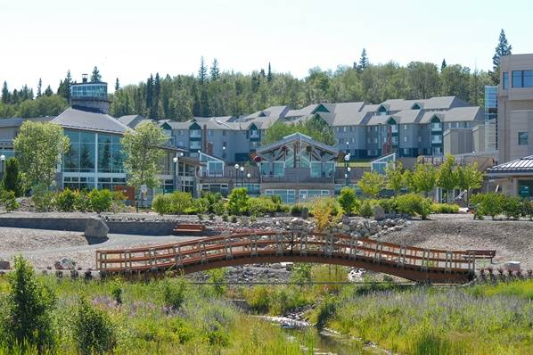

Women, Peace and Security
Women's participation, protection, and agency in conflict and post-conflict settings, including the localization of the WPS agenda and National Action Plans.
University of Northern British Columbia
Assistant Professor, Global and International Studies
Researching gender, security and global change, with a focus on armed conflict, Women, Peace and Security, cybersecurity, technology-facilitated violence, and disasters.
Profile


Dr. Luna KC is an Assistant Professor in Global and International Studies in the Faculty of Indigenous Studies, Social Sciences and Humanities at the University of Northern British Columbia (UNBC).
Her interdisciplinary and transnational research sits at the intersection of gender, armed conflict, Women, Peace and Security (WPS), cybersecurity, technology-facilitated violence, and disasters. Her work examines how gender and intersectional inequalities shape experiences of conflict, peace, security, digital spaces, and crises, with regional expertise in South Asia, Southeast Asia, and North America.
Before joining UNBC, she was a Postdoctoral Researcher at the Max Bell School of Public Policy at McGill University and lectured at the School of Public Policy and Global Affairs at the University of British Columbia. She earned her PhD (2019) and MA (2011) in International Development Studies from Wageningen University in the Netherlands, focusing on conflict, security, disaster, and public policy.
She has worked with and advised organizations including Plan International, the Canadian Research Institute for the Advancement of Women, Women Transforming Cities, National Defence Canada, and the Asian Development Bank. She is also a research co-lead with the Research Network on Women, Peace and Security.
Areas of inquiry
My research examines how gender and intersectional inequalities shape people's experiences of conflict, peace, security, digital spaces, and disasters. I am particularly interested in how global change, institutions, local gender norms, and everyday lived experience interact, and what those relationships mean for policy and practice.
Women's participation, protection, and agency in conflict and post-conflict settings, including the localization of the WPS agenda and National Action Plans.
Women ex-combatants, rebel groups, disarmament, demobilization and reintegration (DDR), postwar gender norms, and political transformation.
Critical and feminist approaches to cybersecurity, online harms, digital feminist solidarity, and technology-facilitated gender-based violence.
The gendered effects of disaster, evacuation, relief and recovery, and the ways crises can reshape roles, livelihoods, and inequalities.
How gender intersects with other forms of inequality and how security is experienced in everyday life, particularly by women and marginalized communities.
South Asia, Southeast Asia, and North America, with extensive fieldwork experience in South Asia.
Selected ongoing work
This project examines the transformation of women ex-combatants into political representatives in post-conflict Nepal and Colombia, connecting questions of reintegration, political participation, gender norms, and postwar change.
This applied project develops practical resources to help women and girls navigate online platforms securely and confidently. The work brings feminist and intersectional approaches to cybersecurity together with a toolkit, policy brief, and podcast on technology-facilitated gender-based violence.
This research explores how armed conflict and disasters transform gender roles and women's everyday experiences, building on long-term research in Nepal and an intersectional feminist approach to peace, violence, recovery, and social change.
This project investigates the relationship between cybersecurity and the Women, Peace and Security agenda, including how cyber harms and digital security can be incorporated into policy frameworks and National Action Plans.
Public engagement
Alongside academic research, I contribute public-facing analysis on gender, peace and security, cybersecurity, political change, and developments in South Asia. This work connects scholarly research with current policy and public debates.
Dr. KC is available to be contacted by the media as a subject-matter expert through UNBC. For interview and commentary requests, please use the university email address.
Selected public writing
Civil War Paths
The Conversation · with Crystal Whetstone
Research Network on Women, Peace and Security
London School of Economics · with Anwar Mhajne and Crystal Whetstone
The Diplomat
The Conversation · with Priscyll Anctil Avoine
Canadian Research Institute for the Advancement of Women (CRIAW)
Selected public writing is listed here; see the UNBC faculty profile for additional links and biographical information.
Research outputs
Selected scholarly publications on gender, conflict, postwar reintegration, Women, Peace and Security, cybersecurity, and disasters. Article and chapter titles link to publisher or DOI pages when available.
Peer-reviewed scholarship
Crystal Whetstone and Luna KC · Global Studies Quarterly, 5(3).
Luna KC · Global Studies Quarterly, 5(1), ksaf015.
Luna KC · Global Studies Quarterly, 5(1), ksaf007.
Luna KC and Megan MacKenzie · International Studies Review, 26(4).
Luna KC and Crystal Whetstone · Women’s Studies International Forum, 105, 102952.
Crystal Whetstone and Luna KC · Journal of Asian Security and International Affairs.
Luna KC and Dorothea Hilhorst · International Journal of Disaster Risk Reduction, 72, 102840.
Luna KC and Crystal Whetstone · Global Studies Quarterly, 2(3), ksac036.
Luna KC and Crystal Whetstone · Women’s Studies International Forum, 92, 102575.
Luna KC · Conflict, Security & Development, 19(5), 453–474.
Luna K.C. and Gemma van der Haar · International Feminist Journal of Politics, 21(3), 434–453. Published online 19 November 2018.
Luna KC, Gemma van der Haar, and Dorothea Hilhorst · Journal of Asian Security and International Affairs, 4(2), 175–195.
Edited volumes
Luna KC · In Annika Björkdahl and Johanna Mannergren (eds.), The Production of Gendered Knowledge of War: Women and Epistemic Power, pp. 87–100. Routledge.
Luna KC and Crystal Whetstone · In Research Handbook on the Sociology of Gender, pp. 345–358. Edward Elgar Publishing.
Crystal Whetstone and Luna K.C. · In Anwar Mhajne and Alexis Henshaw (eds.), Critical Perspectives on Cybersecurity: Feminist and Postcolonial Interventions, pp. 25–51. Oxford University Press.
Luna KC · In Rekha Pandey (ed.), Gender and History, pp. 197–219. Rawat Publications.
For an author-maintained publication record, visit ORCID or the UNBC faculty profile.
Courses and mentorship
My teaching brings together critical, feminist, and interdisciplinary approaches to global politics, peace and security, technology, and crisis. I aim to connect theory with contemporary policy questions and everyday experiences of security and inequality.
Teaching interests include critical technology and cybersecurity, Women, Peace and Security, feminist security studies, conflict and post-conflict transformation, and the gendered dimensions of disasters and global crises.
Dr. KC supervises graduate students in International Studies and Gender Studies at UNBC and is currently accepting graduate students.
In 2025, she presented on critical technology, cybersecurity, and Women, Peace and Security in classroom settings at the Research Network on Women, Peace and Security’s Pedagogies for Peace Symposium.
Recent highlights
Dr. KC's project, Rebels to Politicians, received a $70,690 SSHRC Insight Development Grant for a two-year study of women ex-combatants’ transformation into political representatives in Nepal and Colombia.
Project details on UNBC profileIn The Conversation, Dr. KC examines how social media shaped Nepal’s Gen Z protest movement and the powers and perils of digital mobilization.
Read the articleUNBC announced a Department of National Defence Mobilizing Insights in Defence and Security (MINDS) grant supporting a project to develop practical resources addressing online gender-based violence.
Read the UNBC announcement